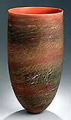
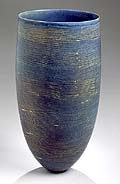

| Pippin
Drysdale’s Tanami (desert) Traces
by Dr David Bromfield
Originally published in Ceramics
Art & Perception. Reprinted by permission.
"You
can’t get away from those very strong fundamentals of process, because
if you try and cheat the system it never works. You can’t get away
with not doing the work, not following the process. You’ve got to
eat and sleep it. That’s how I work, totally involved in creating,
this Tanami Series I will have taken me more than a year to develop
as a major body of work. Its been fraught with a lot of technical
difficulties even last week I discovered that you can’t re-fire
the pot it will crack."
Pippin Drysdale, on the Tanami (desert) Traces
Series I August 2002
For Pippin
Drysdale technique always concerns continuous invention
and experiment; it is never about reliable elegance or repeatability.
The knife-edge presence of her painted forms emerges from an extended
process of experiment and improvising towards a particular remembered
sensation, a precise ‘expression of an experience’ as she puts it.
In this case the experience was a plane trip across central Australia
in and around the Tanami Desert region taken as part of a recent
fellowship from Arts Western Australia.
Australian artists have often use of the airplane
view as a painterly convention, a means to compose their gesture
landscapes in a flat plane. Perhaps because Drysdale is a potter
she saw the land differently, as a challenge to make elegant subtly
shifting irregular patterns, graft across the curved ceramic surface.
She was fascinated by the subtle traces of the land its forms and
shadows as they slid down slowly from the horizon, pink at sunset,
deepest blue green at dawn.
It demanded major changes in her working method
to evoke this in a ceramic form with an independent presence, an
autonomous beauty. It took seven months of experiment with her assistant
Warrick Palmateer, who throws her pots to develop an appropriate
shape from hundreds of small ‘ maquettes, each a slightly different
in shape. Her previous series had used wide bowl shapes or occasionally
a tight cylindrical profile both of which were suitable for a radically
expressive, painterly approach to colors and glazes. Now she had
to abandon the immediate spontaneity of earlier work. In this case
the curvature required a greater subtly, the lip of the vessels
are more precise relation to the volume and the cross section so
that the space implied by its outer surface would unfold slowly
to the inner eye.
The vessels must also be able to hold a tightly
disciplined system of highly crafted lines and stains, unlike the
nebulous forms in her recent work which were achieved almost entirely
buy a mixture of wax or latex resists and glazes calculated to achieve
a semi predictable drift across the surface, a specific density
or translucency on firing. The creation of the new form went hand
in hand with the development of a new type of crumbling, linear
decoration that wrapped round the vessel like rough woven raw silk.
Over time form and decoration slowly fused into one, a single inevitable
presence arose, from hundreds of possibilities judged inadequate
to the intensity of the original experience. Drysdale kept detailed,
but informal, notes during this long process.. . mainly in the form
of ‘notes to myself as to what to do next-
"When
I started this body, I found it very hard to visualize what I wanted.
I find mostly the way I work is with a physical form. I have to
make it see it and have a process of elimination. This doesn’t work,
that doesn’t work, and then yes this one’s got something, lets work
with this and move on to next problem. The form evolves over seven
or eight months. I learned to keep the base physically heavy and
use a sense of gravity. I wanted the form to be quite beautiful
in itself to float and have tension."
© Dr David Bromfield 2002
> Next
More Pots of the Week
|